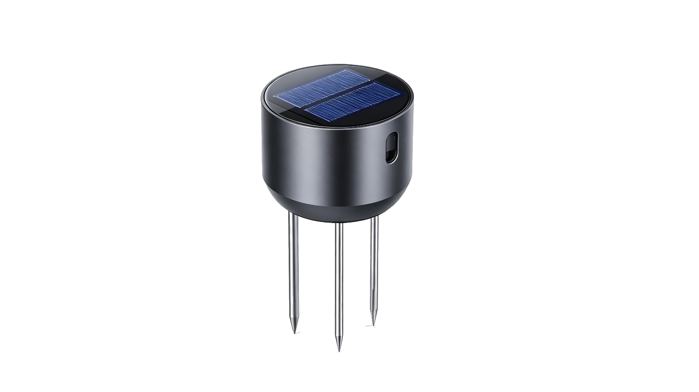
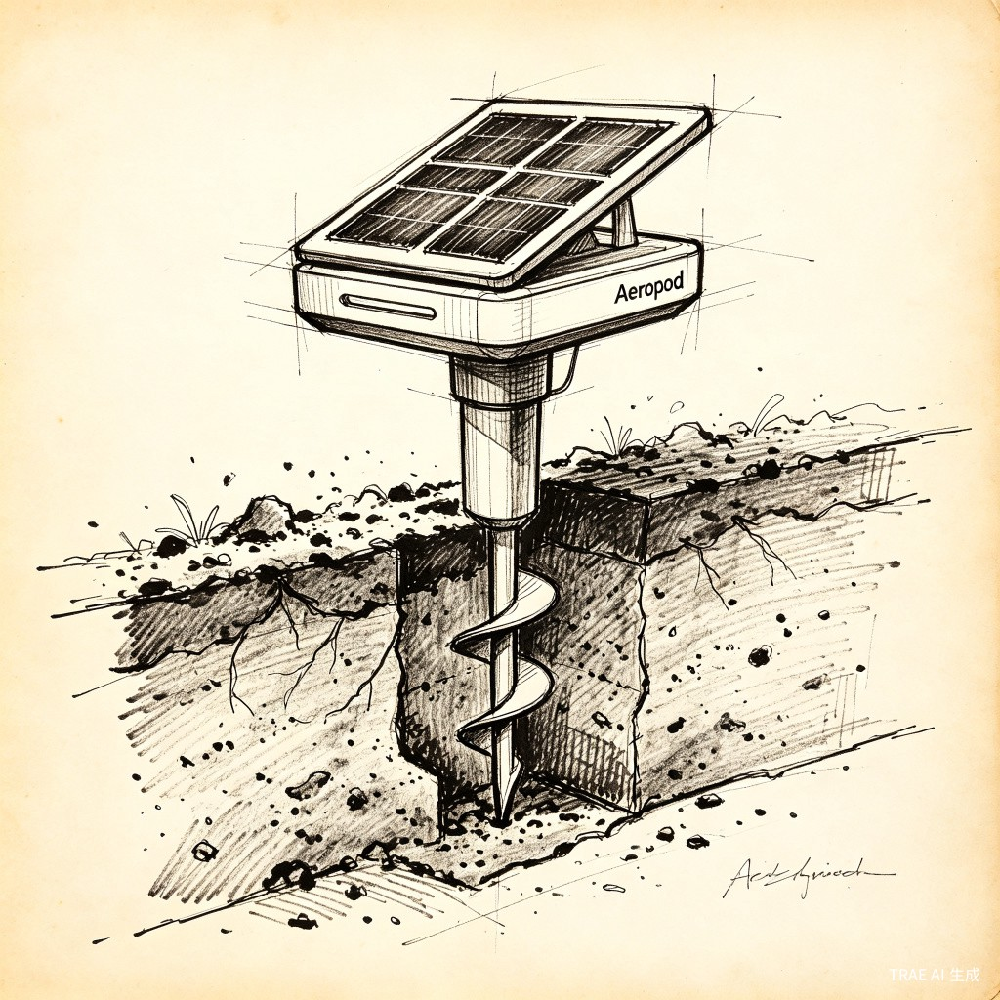
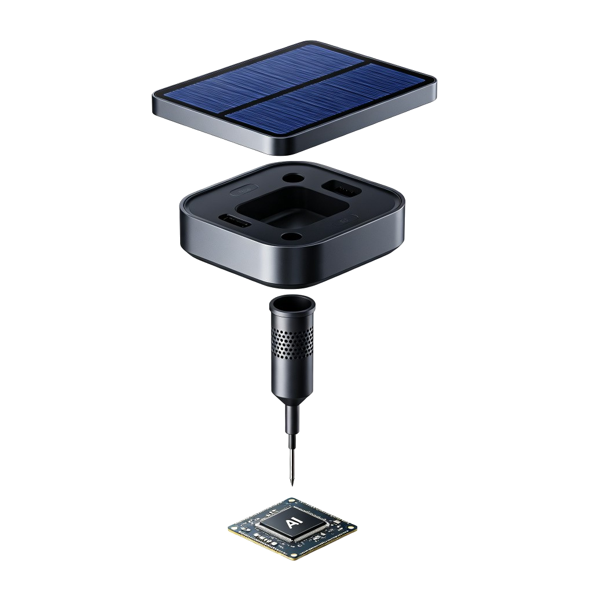
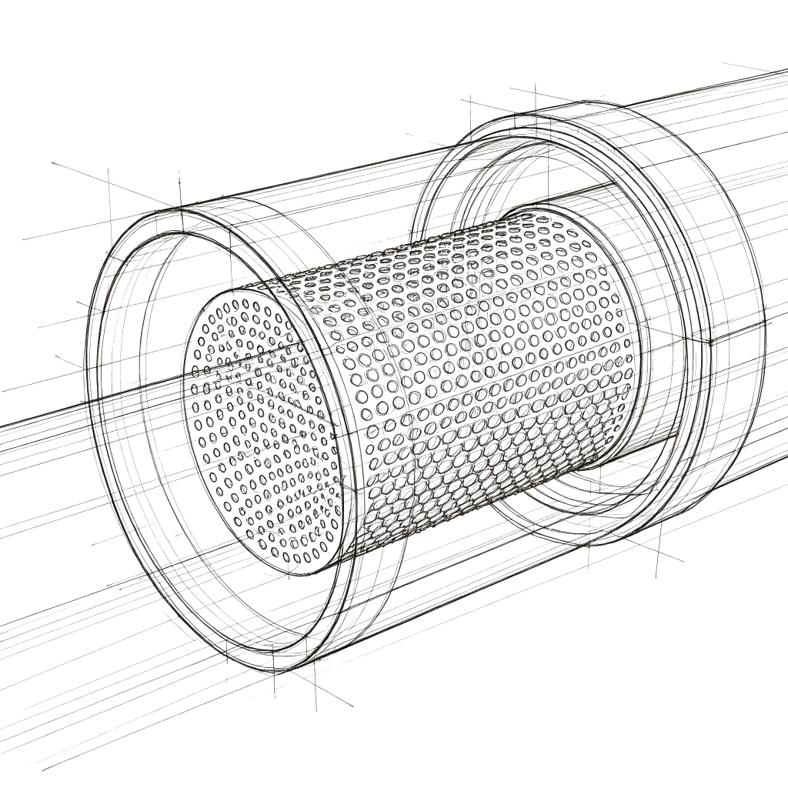
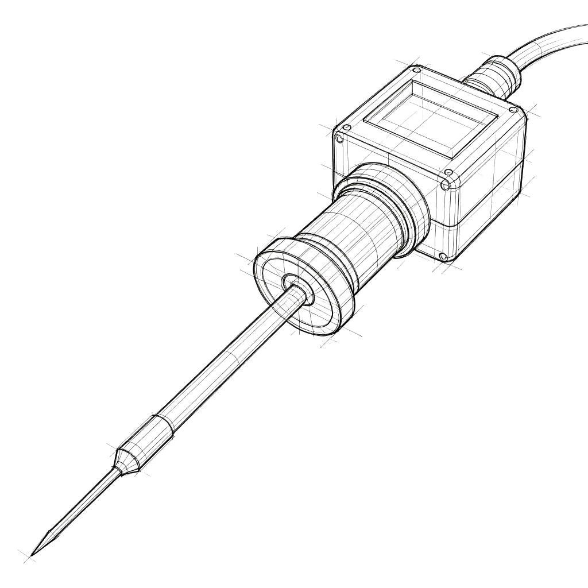
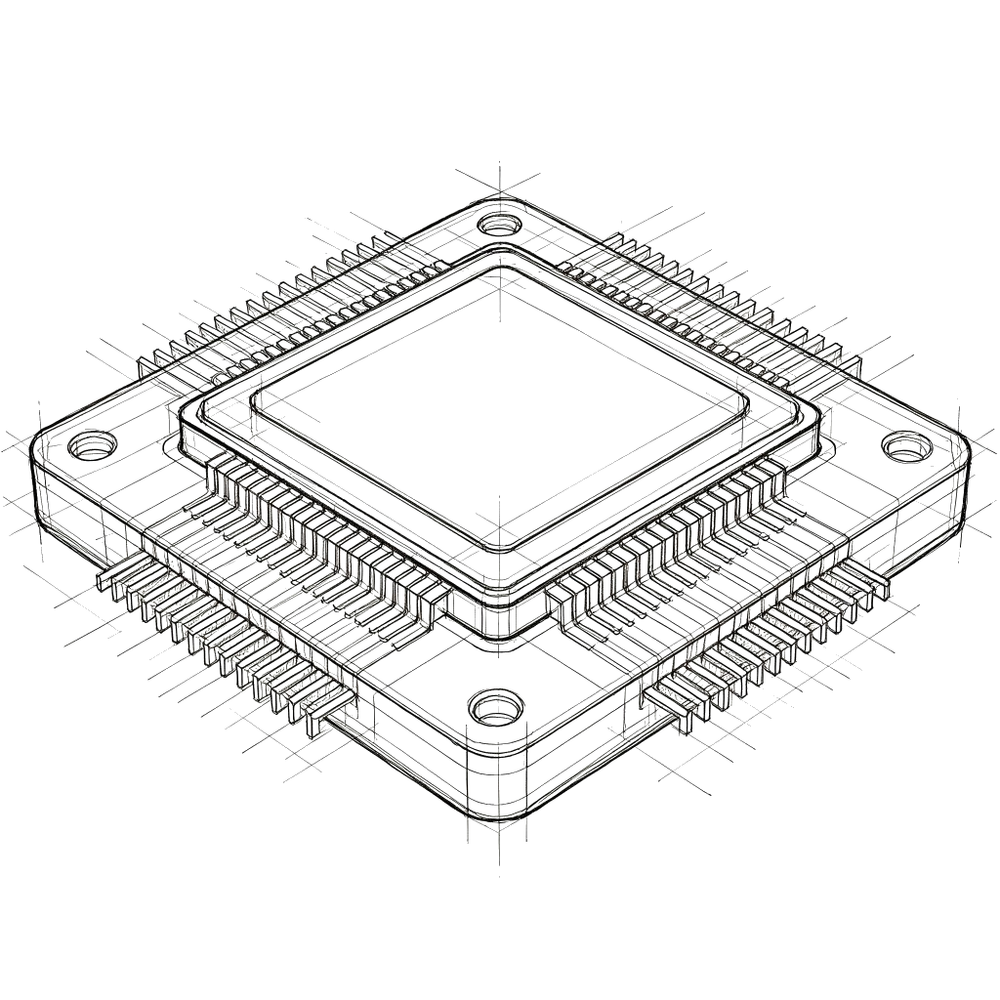

Click to ExplodeSystem Design · Climate Resilience
Designed by 泷
Aeropod 是极高技术落地能力的缩影。IP68 防水铝合金外壳 + 钛合金 Ø8mm 微孔曝气管，深入地下 40cm，每 cm² 含 200 个纳米级气孔。太阳能供电 + 边缘AI芯片预训练 2000+ 全球土壤样本库。从宏观气候命题切入，以微观工程实现最高维度的环保理想。



曝气管道系统
土壤传感器探头
边缘AI控制核心